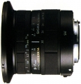
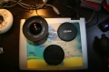

器材库 > 35mm画幅AF变焦镜头 > AF 18-35/3.5-4.5 Asp UC

该产品没有存档的规格参数
云的那边2009-05-03 21:513.33 分
操作性 3.50耐用性 3.00性价比 4.50解像力 3.00色彩还原 3.00机械结构 3.00
dogfield2008-06-02 18:092 分
操作性 3.50耐用性 0.50性价比 2.50解像力 1.50色彩还原 3.00机械结构 1.00
lywme2008-05-30 22:363.83 分
操作性 3.50耐用性 4.00性价比 4.50解像力 3.50色彩还原 4.00机械结构 3.50

lywme2008-05-30 22:35

lywme2008-05-30 22:34
夏日麽麽茶2007-08-06 13:103.83 分
操作性 4.00耐用性 4.00性价比 4.00解像力 3.50色彩还原 3.50机械结构 4.00

五十六条大汉2006-09-03 20:153.75 分
操作性 4.00耐用性 3.50性价比 4.00解像力 4.00色彩还原 3.00机械结构 4.00
skyh2006-04-13 20:043.33 分
操作性 4.50耐用性 3.00性价比 2.50解像力 4.00色彩还原 3.50机械结构 2.50
快乐大猪2005-06-27 13:172 分
操作性 2.00耐用性 2.00性价比 2.00解像力 2.00色彩还原 2.00机械结构 2.00
没钱的小尼2005-03-24 19:175 分
操作性 5.00耐用性 5.00性价比 5.00解像力 5.00色彩还原 5.00机械结构 5.00
该产品暂无存档的产品图
评测 / 相关文章
该产品暂无存档的评测文章